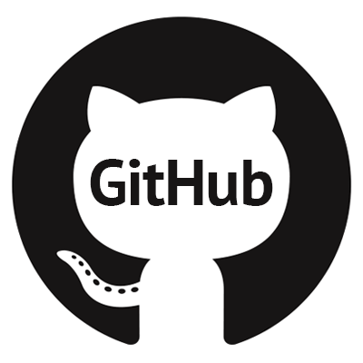
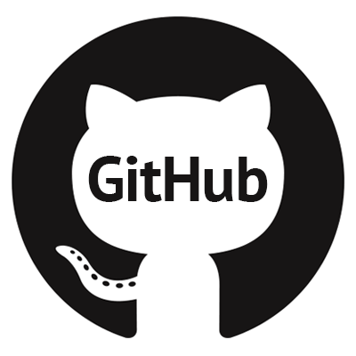

O que é o Git:
De longe, o sistema de controle de versão moderno mais usado no mundo hoje é o Git.
O Git é um projeto de código aberto maduro e com manutenção ativa desenvolvido em
2005 por Linus Torvalds, o famoso criador do kernel do sistema operacional Linux.
Um número impressionante de projetos de software depende do Git para controle de
versão, incluindo projetos comerciais e de código-fonte aberto.
Os desenvolvedores que trabalharam com o Git estão bem representados no pool de
talentos de desenvolvimento de software disponíveis e funcionam bem em uma ampla
variedade de sistemas operacionais e IDEs (Ambientes de Desenvolvimento Integrado).
Tendo uma arquitetura distribuída, o Git é um exemplo de DVCS (portanto, Sistema
de Controle de Versão Distribuído). Em vez de ter apenas um único local para o
histórico completo da versão do software, como é comum em sistemas de controle de
versão outrora populares como CVS ou Subversion (também conhecido como SVN), no
Git, a cópia de trabalho de todo desenvolvedor do código também é um repositório
que pode conter o histórico completo de todas as alterações.
Alémm de ser distribuído, o Git foi projetado com desempenho, segurança e flexibi-
lidade em mente.